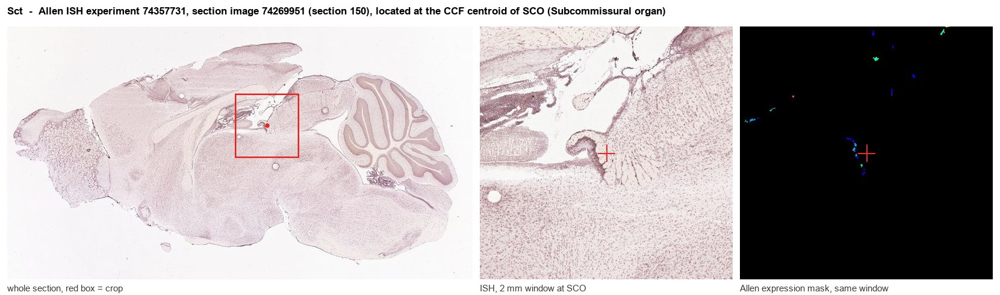
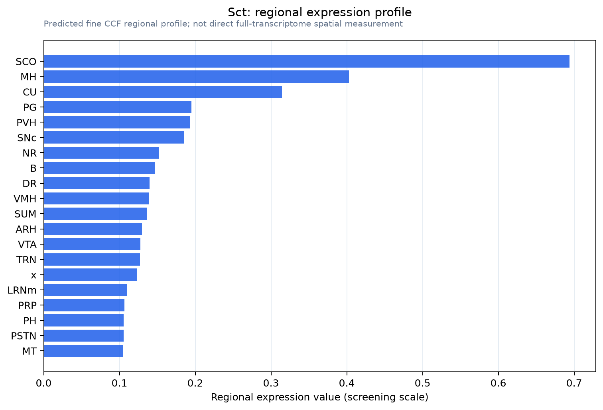

Sct
Spatial tier: STRICT_EXCLUSIVE · Class: OTHER · Top region: SCO (Subcommissural organ) · Positive regions: 6/554
44.9Discovery Score
38.3Targetability Score
CEvidence grade C
What this means: Sct: predicted fine-region profile is strict-exclusive, with 6 positive regions out of 554 (limit 12); direct spatial validation is required.
Function in SCO: evidence, prediction, innovation
- Gene function
- Sct encodes secretin, a 27-residue secretin/glucagon/VIP-superfamily peptide from duodenal S cells that drives pancreatic and biliary bicarbonate and fluid secretion through the class-B GPCR SCTR and Gs-cAMP-PKA. It is also central, made in cerebellar Purkinje cells and hypothalamic neurons and released from the neurohypophysis.
- Region function
- The subcommissural organ is a secretory ependymal gland under the posterior commissure at the third-ventricle/aqueduct junction, releasing SCO-spondin into CSF to form Reissner's fibre and shaping aqueduct patency, CSF flow and axial morphogenesis.
- Published in this region
- inferred No region-specific literature found. Secretin facilitates cerebellar GABA transmission as a retrograde messenger (Yung et al. 2001; Wang et al. 2019), works with vasopressin as a neurohypophysial regulator of water homeostasis (Chu et al. 2009), and its receptor mRNA occurs in circumventricular tissue including OVLT, SCO unscored (Toth et al. 2013).
- Predicted function
- Prediction: SCO-made secretin would be an autocrine/paracrine CSF hormone raising cAMP via SCTR in SCO and adjacent ependyma, driving anion and fluid secretion and linking CSF output to vasopressin water balance. Sspo-CreER x Sct-flox deletion should reduce SCO-spondin and CSF secretion; intracerebroventricular secretin should enlarge ventricles.
- Innovation
- ★★★★☆ 4/5 Brain secretin biology is confined to cerebellum, hypothalamus and neurohypophysis; the SCO as a secretin source is untested.
- Tools
- Sct-null and Sctr-null mice (Chu et al. 2009); Sspo-Cre/Sspo-CreER, Car3-Cre/Spdef-Cre (Zhang et al. 2024); secretin (ChiRhoStim); antagonist secretin(5-27); RNAscope Sct/Sctr probes.
- References
Direct evidence located at the region

Allen ISH experiment 74357731, section image 74269951 (section 150): the section that contains the CCF centroid of Subcommissural organ according to the Allen image-to-atlas alignment (reference_to_image), with a 2 mm window around that point. Left: whole section, red box = window. Middle: ISH signal. Right: Allen's expression-mask view of the same window. open this image in the Allen viewer
Look it up yourself: Allen Mouse Brain ISH for SctAllen reference atlas: SCO (structure 599626923)ABC Atlas MERFISH viewer(in the ABC Atlas choose dataset MERFISH-C57BL6J-638850-CCF, colour cells by gene "Sct" or by parcellation_substructure "SCO")All genes confined to SCO + 3-D brain
Direct spatial evidence
MERFISH REGION LOCATOR

Regional expression figure

Predicted WMB × fine-CCF profile; not direct full-transcriptome spatial measurement.
Spatial profile
Evidence and specificity
- Evidence status
- PREDICTED_FINE
- Direct sources
- None; predicted localization only
- Exclusive threshold
- 12 positive regions out of 554
- Spatial specificity
- 0.331
- Top-region fraction
- 0.116
- Filter status
- PASS
Interpretation limits
- Cell-type-to-region projection is imputed expression, not direct spatial measurement.
- Adult reference atlases do not establish stability across age, sex, strain, state, or disease.
- Transcript abundance does not guarantee protein abundance or genetic-tool performance.